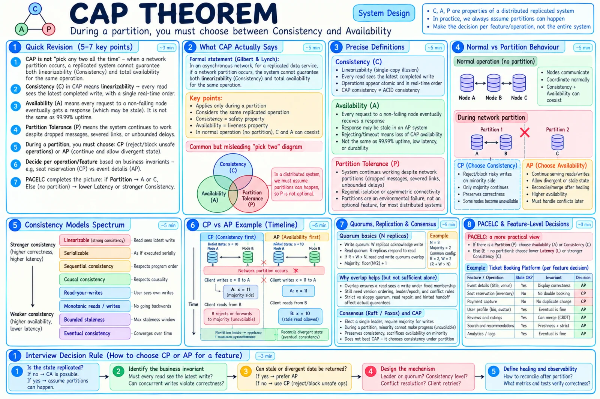
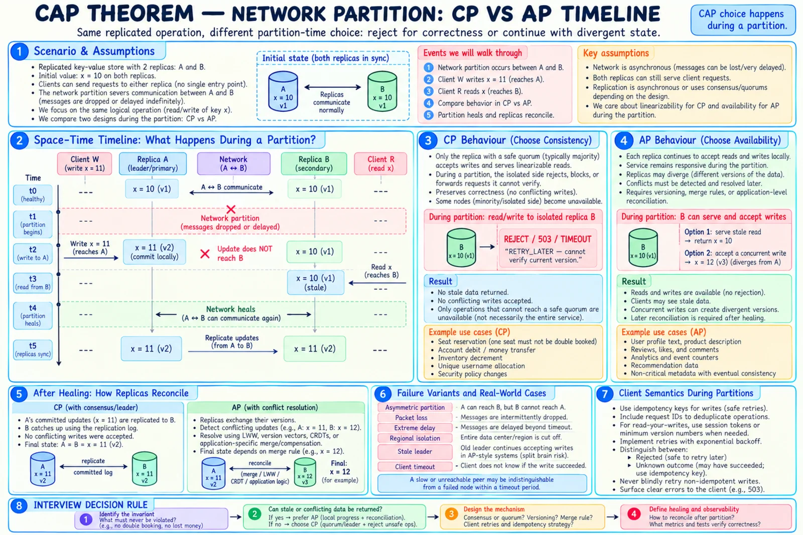

Topic · CAP Theorem in Depth
What CAP Actually Says
When replicas can't talk, an operation must either refuse to protect correctness or continue and accept divergence. Not "pick any two forever".


Quick Revision
- CAP is conditional on a partition; without one, C and A coexist.
- C = linearizability: a read after a completed write can't return older data.
- A = every request to a non-failing node gets a non-error response (stale is OK; reject/wait isn't).
- CP refuses unsafe progress; a majority side may still continue.
- AP keeps local progress and pays later in reconciliation.
- Choose per operation, then finish with PACELC.
The precise statement
For a replicated read/write service in an asynchronous network, during a partition it cannot guarantee both linearizability and total availability for the same operation.
Replicas A and B hold x = 10 1. Network partitions A from B 2. Client writes x = 11 to A → success 3. Another client reads x from B → return 10 now (available, not linearizable) = AP → wait/reject/redirect (consistent, not available) = CP
- Safety vs liveness - consistency = "nothing incorrect happens"; availability = "every request completes".
- Scoped to one operation - event description read → AP; reserve seat → CP; page-view counter → AP; authorization change → CP.
C, A, and P precisely
- Linearizable - each op appears atomic at one instant between call and response, in real-time order; a "single-copy illusion". Not multi-key isolation, serializability, invariants, durability, or exactly-once.
- Available (CAP) - not uptime %, latency, durability, correctness, or DR. A CP DB can hit 99.99%; an AP DB can miss its SLA.
- Partition - severed links, firewall isolation, asymmetric drops, delays beyond timeouts. Tolerance = defined behavior, not every request succeeding.
- Single node - no replica partition, so no CAP trade-off - and no replica fault tolerance either.


CP vs AP during a partition
| CP | AP | |
|---|---|---|
| Behavior | Reject, block, redirect, require majority | Serve and accept writes locally |
| Mechanisms | Single leader, majority commit, terms/fencing | Async replication, multi-leader/leaderless, version vectors, CRDTs, merges |
| Good for | Seat, scarce inventory, ledger, unique username, ACL change, locks, leader election | Event metadata, profiles, reviews, counters, search, telemetry |
| Costs | Lower partition availability, coordination latency, failover complexity | Stale reads, conflicts, repair, surprising behavior across regions |
| Heal | Catch up logs; no conflicting branches if fencing worked | Exchange versions, merge/compensate, repair, verify convergence |
5 replicas split 3 + 2: majority side keeps writing; minority rejects/redirects "CA" = assuming partitions never happen - not a real answer for replicated geo services
Feature-level decisions
| Product | Operation | Choice |
|---|---|---|
| Ticketing | Event description / Reserve seat | AP / CP |
| E-commerce | Product description / Final inventory | AP / CP or escrow |
| Social | View profile / Unique handle | AP + read-your-writes / CP |
| Messaging | Presence / Message sequence | AP / stronger local ordering |
| Payments | Marketing offer / Ledger mutation | AP / CP-sensitive workflow |
| Analytics | Ingest event | AP, at-least-once + dedupe |
| Authorization | Revoke access | CP-sensitive |
- Don't label a whole database - SQL ≠ CA, NoSQL ≠ AP. Ask: which operation, consistency level, leader/quorum/follower read, sync/async, behavior without majority, substitute replicas, conflict repair, scope.
- Spanner - strong + highly available operationally, but loses availability when a quorum is partitioned. TrueTime doesn't beat CAP.
- Caches/search - intentionally stale-tolerant; final actions validate at the source of truth.
Trade-offs
| Choice | Benefit | Cost / risk |
|---|---|---|
| CP during partition | Preserves linearizability and invariants | Rejects some requests |
| AP during partition | Local reads/writes continue | Staleness, divergence, merges |
| Fail closed | Avoids incorrect/security-sensitive action | User-visible errors |
| Serve stale | Read path stays up | Users act on old data |
| Per-product label | Easy shorthand | Misleading |
| Per-operation decision | Business-aligned | More contracts and testing |
Failure modes
- "Pick any two" - the choice happens per operation during a partition.
- Treating P as optional - design explicit partition behavior and recovery.
- CAP C = ACID C - linearizability vs invariant preservation.
- CAP A = uptime SLA - discuss both separately.
- Whole database labelled CP/AP - state operation, topology, level, failure case.
- One policy for every feature - build an operation consistency matrix.
- Stale balance/authorization served - leader/quorum read or fail closed.
- Harmless catalog read rejected - serve bounded-stale replica/cache.
- Search index treated as truth - revalidate at the authoritative store.
Interview practice
Answer aloud, then reveal.
Infosys DSE: CAP scenarios, why it matters, where each approach is used.
Replicated state under partition; C = linearizability, A = every non-failing node responds. CP for seats, balances, uniqueness, auth; AP for profiles, reviews, search, counters. Decide per operation, explain mechanism, add PACELC.
Autodesk SDE 1 (Sep 2025): explain C, A, P with examples.
C: once A12 is reserved no later read shows it free. A: an AP catalog replica returns an old description. P: defined behavior when nodes can't talk - reserve-seat rejects on the unsafe side; description reads continue.
NetApp SE (Dec 2025): CAP in a scalable design; SQL vs NoSQL.
Replication introduces the coordination choice. SQL vs NoSQL doesn't decide CAP - topology, consistency level, quorum, failover do. Give a feature-level example and recovery.
Zomato SDE 1 (Jul 2025): does CAP apply to SQL?
Yes, once replicated. Primary + sync replicas can reject writes without quorum; async followers serve stale reads. SQL is a query model, not a partition guarantee.
Spocto/Yubi Lead (Jul 2025): show real understanding of CAP.
Conditional theorem; precise C/A; a timeline (stale read vs rejection); mechanisms (leader/quorum/fencing vs versions/merge/repair); per-feature choice + PACELC + observability.
Target SE (2025): real-world CAP example.
One ticket platform, two features: event details AP (minutes stale OK), reserve seat A12 CP (reject without quorum).
Is a CP system completely down during a partition?
No - majority side, other shards, and stale-tolerant endpoints continue. Only ops needing the unreachable quorum fail.
Crashed node vs partition?
A clean crash is agreed on; a partition leaves both sides alive and accepting clients - split-brain risk. Failure detectors only suspect.
Strongly consistent and highly available?
Operationally yes (great uptime). Not totally available for every request under every partition while linearizable.
60-second CAP answer?
CAP applies to replicated state when nodes can't communicate. During a partition, correctness-sensitive ops reject (CP), others continue with stale data (AP). Seats and ledger CP; details, search, analytics AP. Then mechanism, retries, healing, PACELC.